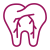
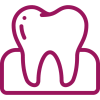
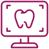
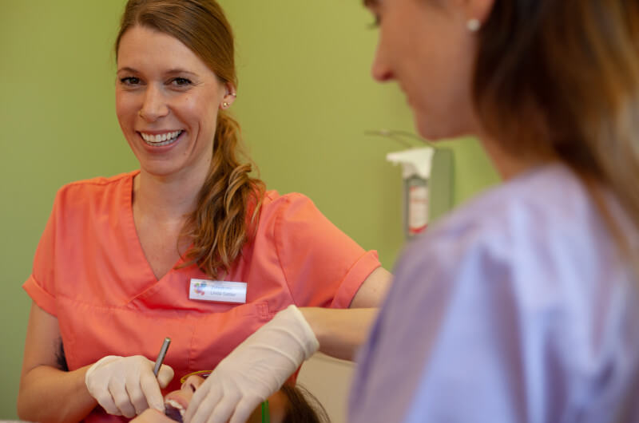
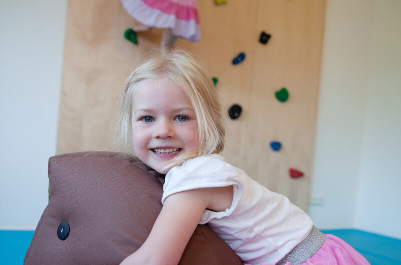
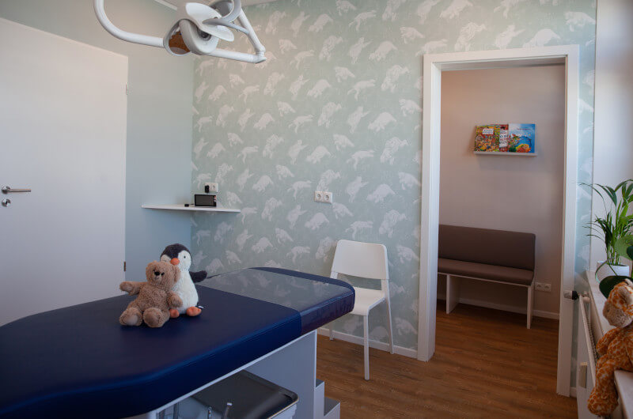

Kinderzahnarzt in Hamburg – herzlich willkommen!
Liebe Eltern, liebe Kinder,
die Kinderzahnarztpraxis HoheLuft ist eine spezialisierte Praxis für Kinder- und Jugendzahnheilkunde – für uns der schönste Teil der Zahnmedizin. Unser Ziel ist es, den Zahnarztbesuch durch kindgerechte Behandlungsmethoden zu einem nachhaltig positiven Erlebnis zu machen und so späterer Zahnarztangst vorzubeugen.
Unser Behandlungskonzept umfasst das gesamte Spektrum der Kinder- und Jugendzahnheilkunde. Dabei orientieren wir uns an den Leitlinien der Deutschen Gesellschaft für Kinderzahnheilkunde. Besonders am Herzen liegt uns die Vorbeugung gegen frühkindliche Karies. Wo nötig, behandeln wir mit Lachgas oder in Narkose.
Unsere Praxis liegt direkt an der Hoheluftchaussee und ist aus Hoheluft, Eppendorf, Eimsbüttel, Harvestehude und Lokstedt schnell erreichbar.
Unser Behandlungsspektrum
Kontrolle & Vorsorge
Ab dem ersten Zahn, mindestens alle sechs Monate.
Verhaltensführung
Vertrauen aufbauen – stressfrei und kindgerecht.
Prophylaxe, PZR & Zahnputzschule
Richtig putzen lernen – Vorsorge statt Nachsorge.
Fissurenversiegelung
Schützt die Backenzähne wirksam vor Karies.
Füllungen
Passendes Material, gemeinsam mit Ihnen gewählt.

Milchzahn-Nervbehandlung
Schützt den bleibenden Zahn darunter.
Kinderkronen
Erhält stark zerstörte Milchzähne als Platzhalter.

Kreidezähne (MIH)
Früh erkennen und eng begleiten.

Digitales Röntgen
Detaillierte Bilder mit wenig Strahlung.
Lachgas
Hilft ängstlichen Kindern, sich zu entspannen.
Behandlung in Narkose
Für umfangreiche Behandlungen – Eltern sind dabei.
Ästhetische Lückenhalter & Platzhalter
Halten Lücken frei für die bleibenden Zähne.

Herzlichkeit & 12 gute Gründe
Mit herzlicher Kommunikation und kindgerechter Behandlung sorgen wir für ein positives erstes Zahnarzt-Erlebnis – und für Vertrauen, das bleibt.
- Herzliches & professionelles Team mit langjähriger Berufserfahrung
- Spezialisierte Praxis für Kinder- und Jugendzahnheilkunde
- Kindgerechte Kommunikation & Praxisausstattung
- Dauerhafte Stärkung des Vertrauens zu Zahnärzt*innen
- Umfangreiches Leistungsspektrum, u. a. Lachgas und Kurznarkose
- Vorsorgekonzept durch Präventionsmaßnahmen
- Kinderprophylaxe & Zahnputztraining
- Digitales Röntgen mit kleinem Kindersensor
- Interdisziplinärer Austausch mit Partnerpraxen
- Notfallsprechstunde nach Absprache
- Recall-System für Vorsorgetermine
- Gute Erreichbarkeit & ausreichend (teils kostenlose) Parkplätze
Unsere Praxis
Hell, freundlich und ganz auf Kinder eingestellt – mit Spielecke, Kletterwand und liebevoll gestalteten Räumen.



Folgen Sie uns auf Instagram
Neues aus der Praxis, Zahnputz-Tipps und Einblicke hinter die Kulissen – auf @kizahoheluft.
Häufige Fragen
Ab wann sollte mein Kind zum Kinderzahnarzt?
Am besten ab dem ersten Zahn. So gewöhnt sich Ihr Kind früh und ganz entspannt an die Praxis, und wir können frühkindlicher Karies vorbeugen.
Wie oft sind Kontrolluntersuchungen sinnvoll?
Wir empfehlen mindestens alle sechs Monate eine Kontrolle. Auf Wunsch erinnern wir Sie an den nächsten Termin.
Behandeln Sie auch ängstliche Kinder?
Ja. Mit kindgerechter Verhaltensführung, viel Geduld und bei Bedarf mit Lachgas wird die Behandlung für Ihr Kind stressfrei. Für umfangreiche Behandlungen bieten wir auch Narkose an.
Werden gesetzlich und privat versicherte Kinder behandelt?
Ja, wir behandeln Kinder und Jugendliche mit gesetzlicher und privater Versicherung.
Was tun bei Zahnschmerzen oder einem Unfall?
Rufen Sie uns während der Sprechzeiten unter 040 40 11 321 0 an. Nach Absprache gibt es eine Notfallsprechstunde.
Wo kann ich parken?
In der Hoheluftchaussee, im Parkdeck im Innenhof und im Parkhaus Falkenried. Mit der U3 sind Sie in wenigen Minuten an der Haltestelle Hoheluftbrücke.
Sprechzeiten
| Montag – Donnerstag | 9–13 Uhr 14–17 Uhr |
| Freitag | 9–13 Uhr |
| Samstag, Sonntag | geschlossen |
Rufen Sie uns an: 040 40 11 321 0
Anfahrt
Hoheluftchaussee 52, 20253 Hamburg
- U3 bis Hoheluftbrücke
- Busse 5, 20, 25 und X35 bis Eppendorfer Weg (Ost)
- Parkdeck im Innenhof, Parkhaus Falkenried